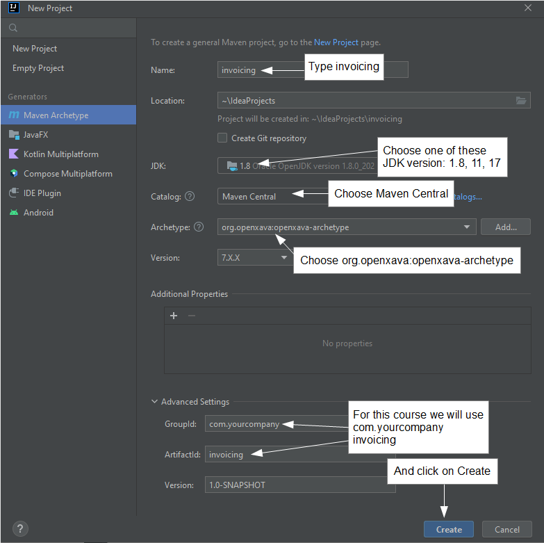
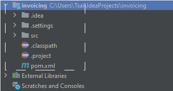
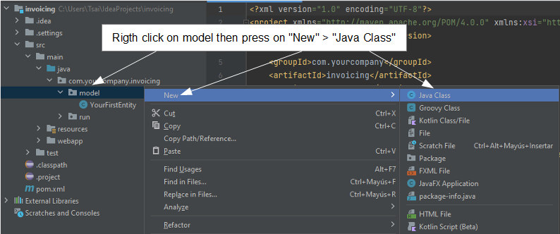
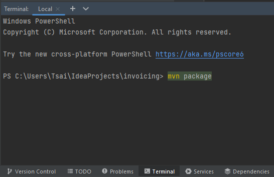
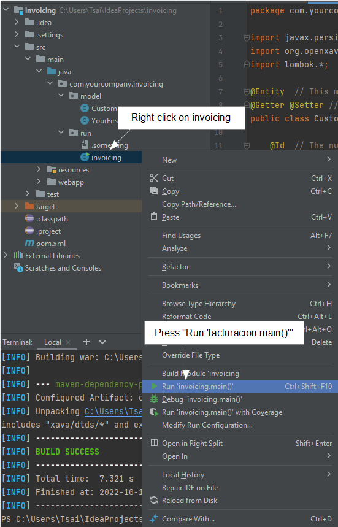
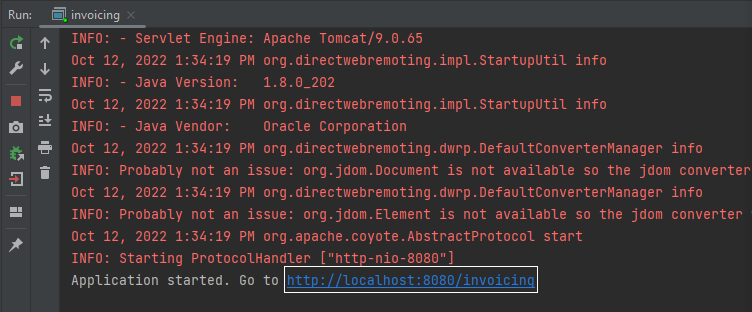
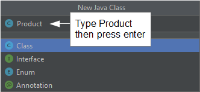
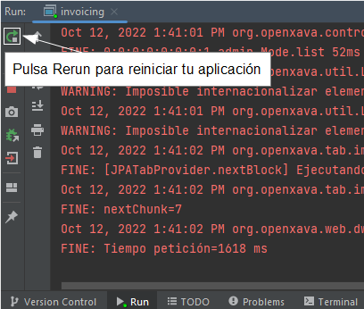
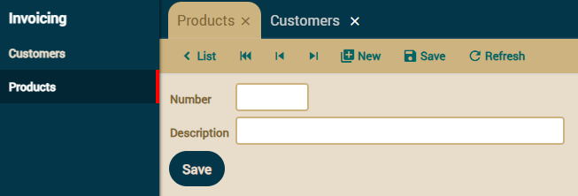

First, you have to create a new Maven project, with the following settings, but selecting 7.6.1 for the Version field (never select 7.X.X for version):

Now your project is ready to start to write code:

Developing the application is very easy. You only have to add entities in order to make your application grow. We start with a simple version of Customer with only number and name.
Open the src/main/java folder, there select the com.yourcompany.invoicing.model package and right click on it, then press Java Class button:

Then type Customer as class name and press enter.
Note that the C of Customer is uppercase, this is very important, all Java classes start with uppercase.
The initial code that IntelliJ provides for Customer is pretty simple:
package com.yourcompany.invoicing.model;
public class Customer {
}
Now, you have to fill this class in order to convert it to an entity suitable for OpenXava. You only need to add the @Entity annotation, the number and the name properties:
package com.yourcompany.invoicing.model;
import javax.persistence.*;
import org.openxava.annotations.*;
import lombok.*;
@Entity // This marks Customer class as an entity
@Getter @Setter // This makes all fields below publicly accessible
public class Customer {
@Id // The number property is the key property. Keys are required by default
@Column(length=6) // The column length is used at the UI level and the DB level
int number;
@Column(length=50) // The column length is used at the UI level and the DB level
@Required // A validation error will be shown if the name property is left empty
String name;
}
At last you have enough code (just one class) to run your application. Let's run it.
In the Maven tab, select invoicing > Lifecycle, double click package and wait a while.

Then, in the package com.yourcompany.invoicing.run, right click on invoicing and press on the Run'invoicing.main()' button:

Wait until the console shows a message saying "Application started", like this:

Then your application is already running. To check this, open your favorite browser (Chrome, Firefox, Edge or Safari) and go to the next URL:
http://localhost:8080/invoicing
You get your application running for the first time. To start click on Sign in button

Now, enter admin/admin and click on Sign in:

Then on top the left you will have a list of modules, choose Customers:

Use the Customers module to create new customers, just enter number and name and press Save.

Click on List to see the list of created customers. Congratulations, you have your first OpenXava application running.
From now on, developing the application with OpenXava is very easy. Just write a class and go to your browser to see the result. Let's create a new entity for Product.
Select the com.yourcompany.invoicing.model package and click on New > Java Class:
Then type Product as class name and press enter.

Write the next code for Product:
package com.yourcompany.invoicing.model;
import javax.persistence.*;
import org.openxava.annotations.*;
import lombok.*;
@Entity @Getter @Setter
public class Product {
@Id @Column(length=9)
int number;
@Column(length=50) @Required
String description;
}
Now, click on the Run button, it stops your application and restarts it again:

To see your new entity in action open your browser and go to the URL:
http://localhost:8080/invoicing/modules/Product
After sign in with admin/admin you'll get:

Yes, you have a new module running, and just writing a simple class. Now you can concentrate on growing your application.
Congratulations! You have created your first OpenXava application. Otherwise, if you have had any problem with the above example, ask in the forum:
We'll help you to overcome any difficulty.
This guide, getting started using IntelliJ, is the lesson 1 of a complete OpenXava course. The rest of the course is in Eclipse and will teach you how to develop enterprise applications with OpenXava as well as other Java related technologies, tools and frameworks. Together we will develop step by step a complete application from scratch. The application chosen is a small invoicing application with invoices, customers, products and so on. This application is just a brief way to learn some typical cases in business applications. You can apply everything you learn with the invoicing application to any other business application of any other domain.
This is the content of the course:
You're ready to continue to the next lesson, however you should consider to have a look at some base knowledge, such as:
Do you want to use Maven or Visual Studio Code? Do you want to go against MySQL, PostgreSQL, Oracle, Microsoft SQL Server, AS/400, Informix, Db2 or Firebird? Do you want a detailed reference guide? Look at the OpenXava documentation, that includes this and much more.
Are you ready? Go to Lesson 2